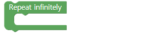

Robot memberitahu cuaca
• Memahami cara membawa data cuaca dari Internet.
• Bagikan data penting di antara data cuaca.
• Anda dapat membuat gerakan yang berbeda tergantung pada cuaca dan menggunakan AsomeBot untuk memberi tahu cuaca.
A. Bagaimana Anda meramalkan cuaca?
Satelit memantau pergerakan awan dan terus mengukur suhu dan kelembaban untuk memprediksi bagaimana cuaca akan berubah hari ini atau besok.
B. Bisakah AsomeBot memberi tahu ramalan cuaca?
Diskusikan dengan teman dan guru Anda bagaimana Anda dapat memperkirakan cuaca dengan AsomeBot.
C. AsomeBot dapat mengunduh data dari Internet, seperti cuaca, suhu, dan kelembaban. Bisakah kita menggunakan ini untuk memberi tahu cuaca dalam gerakan dan suara AsomeBot?
D. Kapan, di mana, dan bagaimana kami dapat memperkirakan cuaca?
A. Terhubung ke internet/connect to internet (grup [INTERNET])
Tentukan nama dan kata sandi router nirkabel tempat AsomeBot akan terhubung. Robot harus mengunduh data dari Internet, sehingga router harus terhubung ke Internet.

① Masukkan nama router Internet.
② Masukkan kata sandi router Internet.

Anda dapat menemukan nama router nirkabel yang ingin Anda gunakan dalam daftar WiFi smartphone dan terhubung ke smartphone Anda.
B. Buka/open soket UDP (grup [INTERNET])
AsomeBot membuka port untuk berkomunikasi melalui Internet.

① Nomor port yang akan digunakan.Gunakan nomor sebagaimana adanya tanpa modifikasi.
C. Dapatkan data Cuaca/get weather data (grup [INTERNET])
Unduh data terkait cuaca dari Internet.

① Masukkan nama kota dan negara untuk mengunduh data cuaca.

Nilai nama untuk setiap kota
Hanoi Vietnam: Hanoi, VN
Seoul, Korea Selatan: Seoul, KR
Los Angeles (AS): LA, US
D. Mengukur jarak/measure distance (grup [SENSOR])
Dengan sensor ultrasonik, ukurlah jarak penghalang di depan. Nilai jarak yang diukur disimpan dalam nama variabel 'Cm'. Sensor dapat melaporkan cuaca saat seseorang berdiri atau melintas pada jarak sedang.

E. Ulangi/repeat (grup [ADVANCE])
Ulangi perintah di dalam blok sebanyak yang Anda inginkan.

① Tentukan berapa kali untuk mengulangi.
② Tambahkan blok untuk mengulang.
F. Ulangi hingga tak terbatas/repeat infinitely (grup [ADVANCE])
Blok di dalam blok ini akan dijalankan secara berurutan dan berulang tanpa henti .
G. JIka/if (grup[ADVANCE])
Jalankan blok di dalam blok ini ketika input detail kondisinya benar. Jika kondisinya salah, blok yang mengikuti blok [if] akan dieksekusi.

① Masukkan variabel yang akan digunakan dalam pernyataan bersyarat. Nilai default adalah ' i' dan berubah menjadi 'cm' saat menggunakan sensor ultrasonik.
② Pilih ketidaksetaraan default untuk membandingkan kondisi.
③ Masukkan nilai default untuk digunakan dalam kondisi ini.Anda perlu menambahkan blok untuk menentukan nilai bersyarat.
④ Tambahkan blok yang akan dieksekusi ketika kondisinya benar.
H. Blok Data Blok Nilai Karakter (grup[ADVANCE])
Anda dapat menggunakan salah satu dari dua blok berikut untuk nilai kondisional dari pernyataan kondisional.

Untuk blok data, masukkan dan gunakan nilai yang ingin Anda bandingkan.
① Masukkan nilai data untuk dibandingkan dengan variabel pernyataan kontrol.

blok nilai karakter harus digunakan saat menggunakan nilai karakter untuk nilai bersyarat atau menggunakan nilai karakter atau karakter input yang diterima dari Internet sebagai nilai bersyarat.
① Masukkan karakter yang akan digunakan sebagai syarat.
Nilai karakter yang terkait dengan cuaca
Nilai karakter terkait cuaca yang dapat Anda unduh dari Internet adalah sebagai berikut:
Hari hujan: hujan
Hari yang cerah: cerah
Hari bersalju: salju
Buat program yang memainkan skala 'Do' 'Re' 'Mi' dalam urutan 1 detik jika nilai cuaca hari ini yang diunduh dari Internet adalah 'cerah'.
I. Jeda/Break (grup [ADVANCE])
Ketika Anda memenuhi kriteria blok selama program loop tak terbatas, hentikan loop tak terbatas dengan menjalankan kode berikut.
Buat program yang melakukan [Flap] 3 kali ketika ada orang atau objek dengan 50cm di depan AsomeBot .
J. Siaga/Attention (grup[BASIC])
AsomeBot dapat jatuh jika terhubung ke gerakan lain ketika kaki telah bergerak terlalu banyak.Menempatkan [Attention] di antara setiap gerakan akan membuat AsomeBot berdiri tegak untuk mencegah agar tidak jatuh.
K. Gerakan tari tanpa Opsi (grup [DANCE])

Lakukan gerakan balet dengan mengacungkan jari kaki AsomeBot.
AsomeBot bergoyang-goyang.

AsomeBot mengepakkan kakinya.

AsomeBot melakukan Warigari dengan kakinya.

AsomeBot mengangkat ujung jari kaki.Kebalikan dari gerak balet.

AsomeBot menampilkan tarian moonwalk.
L. Gerakan tari dengan Opsi (grup [DANCE])
Pilih arah untuk menggerakkan arah kaki AsomeBot di opsi semua gerakan dansa.

Angkat satu kaki AsomeBot dan lakukan gerakan.

Angkat dan lipat ke belakang satu kaki AsomeBot.

Lipat satu kaki AsomeBot kembali dan goyangkan sekali.
M. Bel menyala/Buzzer on di (grup [SOUND])
Untuk membuat suara dengan bel, Anda harus menggunakan blok ini. Perhatikan bahwa jika blok tidak digunakan terlebih dahulu, Anda tidak dapat menggunakan blok.

N. Bel mati/Buzzer off (grup [SOUND])
Ini memungkinkan Anda untuk menggunakan komponen lain lagi setelah menggunakan bel. Anda tidak dapat menggunakan komponen lain saat menggunakan bel. Setelah memutar musik, blok harus digunakan untuk menjalankan komponen lain.

O. Mainkan untuk/Play for (grup [SOUND])
Dengan menggunakan blok ini, Anda dapat membuat suara yang Anda inginkan menggunakan frekuensi.

① Pilih skala dari daftar yang ingin Anda mainkan.
② Pilih oktaf skala dari daftar yang akan diputar.
③ Tentukan waktu untuk membuat suara.
A. Aturan Permainan
① Mari kita bicara tentang bagaimana dan kapan memulai ramalan cuaca.
② Mari kita bicara tentang bagaimana AsomeBot dapat mengekspresikan cuaca.
③ Selain cuaca, bicarakan tentang perkiraan informasi lain (suhu, kelembaban, dan debu halus).
④ Selain tentang air, bicarakan tentang layanan data apa lagi yang dapat Anda unduh dan ramalkan dari Internet.
B. Algoritma
① Setel untuk mengunduh data cuaca dari Internet.
② Kembangkan gerakan untuk berlari sesuai cuaca.
③ Tentukan kondisi mana yang harus diramalkan ketika kondisi terpenuhi dan kembangkan program.
④ Kembangkan program yang melakukan gerakan untuk cuaca hari ini ketika kondisi terpenuhi.
⑤ Tambahkan program untuk membuatnya lebih menarik.

C. Membuat dan memamerkan program prakiraan cuaca